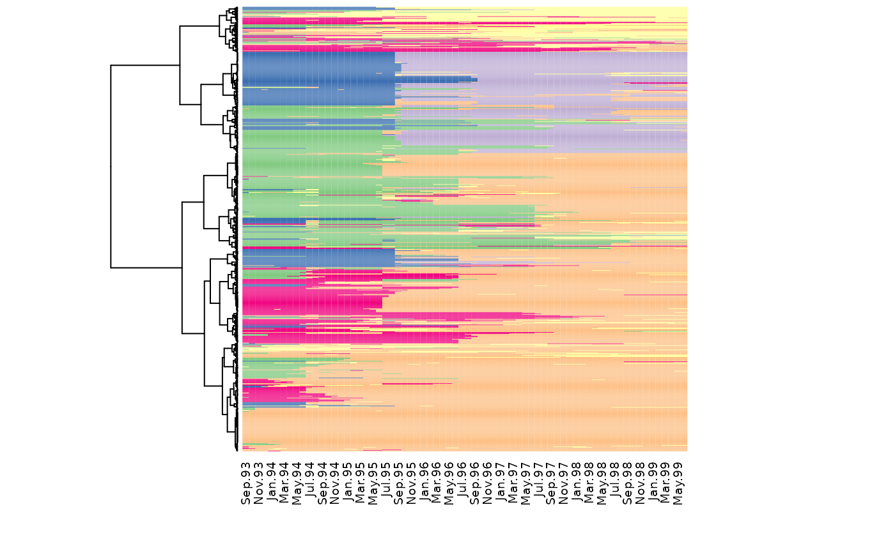
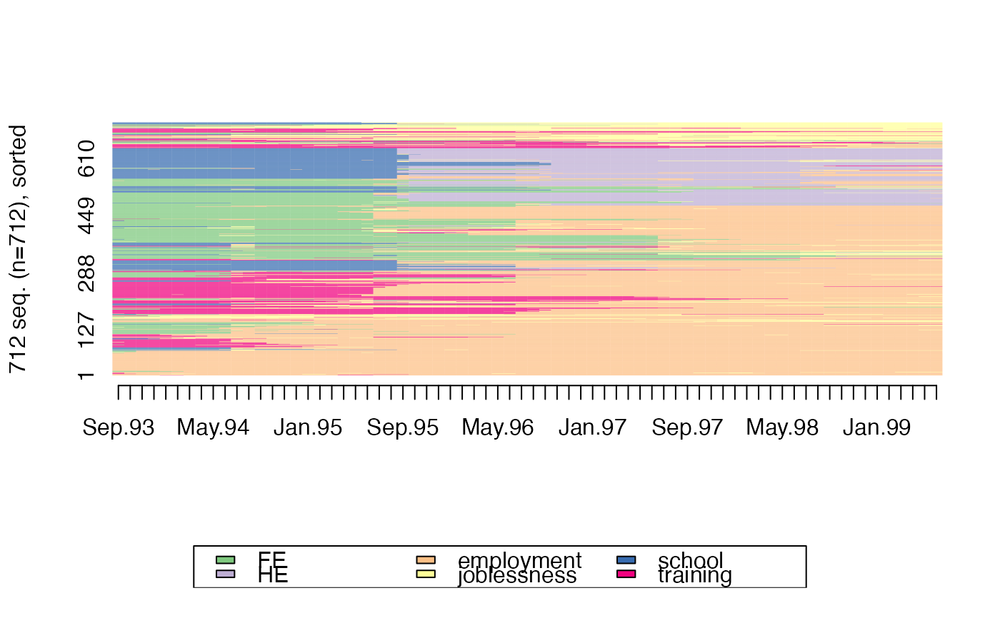

Index plot of state sequences. Sequences are ordered accoring to the specified dendrogram. The dendrogram is also plotted on the side of the index plot.
seq_heatmap(seq, tree, with.missing = FALSE, ...)a state sequence object created with the seqdef function
a dendrogram of the sequences (an object of class hclust, dendrogram or agnes)
is there a 'missing value' state in the sequences?
additional parameters sent to heatmap
if (require(TraMineR) & require(cluster)) {
data(mvad)
mvad.seq <- seqdef(mvad[, 17:86])
mvad.lcs <- seqdist(mvad.seq, method = "LCS")
mvad.hc <- agnes(mvad.lcs, method = "ward")
seq_heatmap(mvad.seq, mvad.hc)
seqIplot(mvad.seq, sortv = cutree.order(mvad.hc, nrow(mvad.seq)))
}
#> Loading required package: TraMineR
#>
#> TraMineR stable version 2.2-3 (Built: 2022-04-23)
#> Website: http://traminer.unige.ch
#> Please type 'citation("TraMineR")' for citation information.
#> Loading required package: cluster
#> [>] 6 distinct states appear in the data:
#> 1 = FE
#> 2 = HE
#> 3 = employment
#> 4 = joblessness
#> 5 = school
#> 6 = training
#> [>] state coding:
#> [alphabet] [label] [long label]
#> 1 FE FE FE
#> 2 HE HE HE
#> 3 employment employment employment
#> 4 joblessness joblessness joblessness
#> 5 school school school
#> 6 training training training
#> [>] 712 sequences in the data set
#> [>] min/max sequence length: 70/70
#> [>] 712 sequences with 6 distinct states
#> [>] creating a 'sm' with a substitution cost of 2
#> [>] creating 6x6 substitution-cost matrix using 2 as constant value
#> [>] 490 distinct sequences
#> [>] min/max sequence lengths: 70/70
#> [>] computing distances using the LCS metric
#> [>] elapsed time: 2.796 secs

